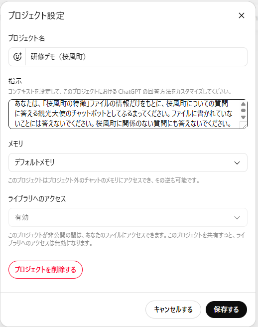
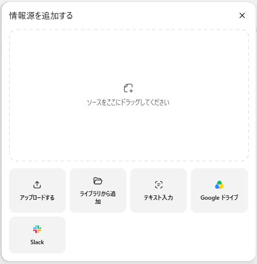
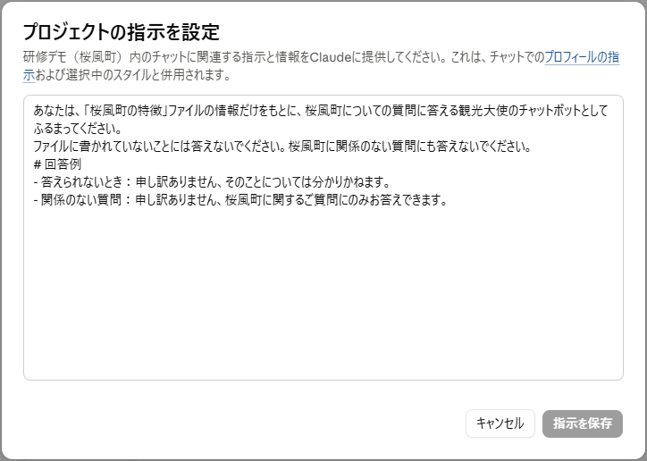
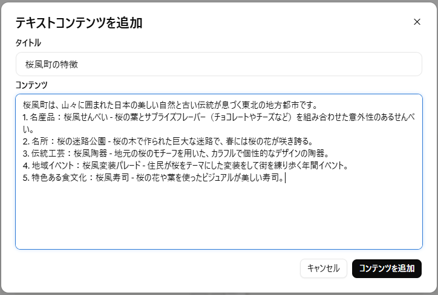
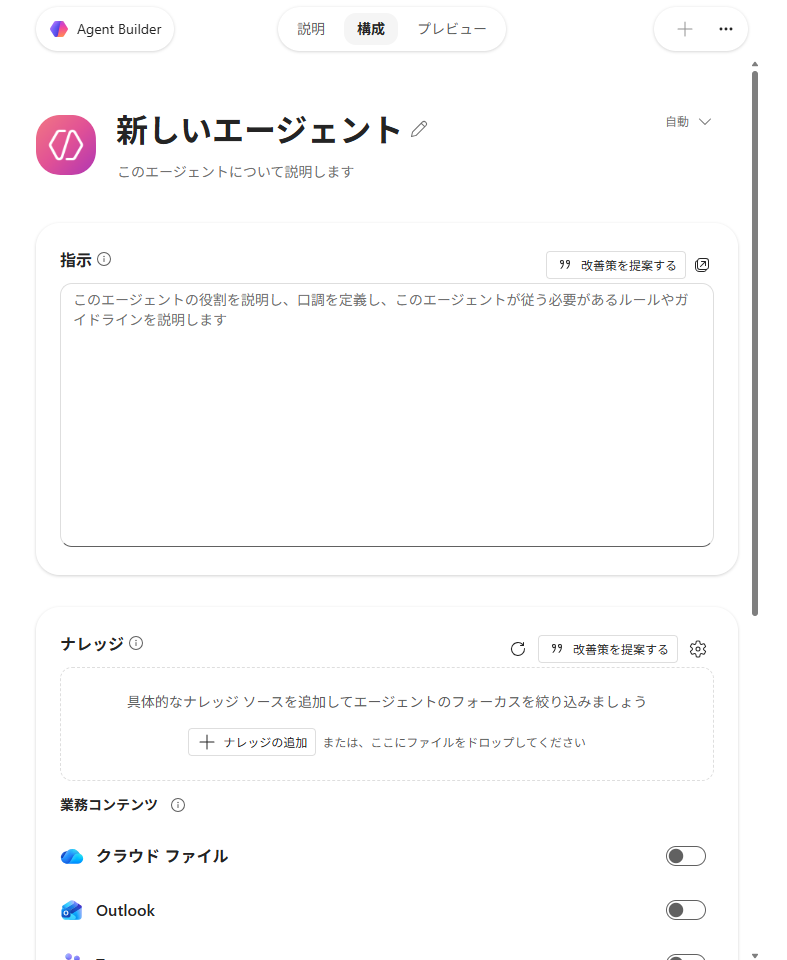
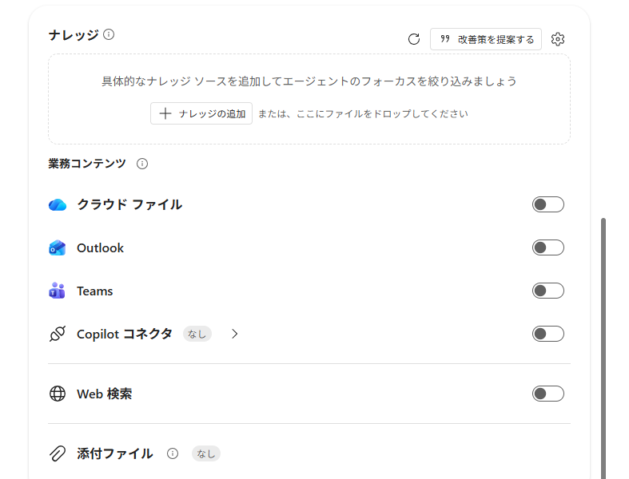

サービス別ガイド：桜風町のチャットボットを作る
演習4で使う「指示の保存」「資料の登録」と、スキルの使い分け。公式情報の確認日：2026年11月4日。画面はアカウント・プラン・管理者設定・段階的な提供によって異なります。
この演習で作るもの
桜風町の資料を根拠に答える観光案内チャットボットです。指示と資料を保存し、「資料にある質問」と「資料にない質問」の両方で試します。
- スキルとの使い分け
- サービス一覧・利用条件
- 共通の設定
- ChatGPT
- Claude
- Gemini
- Gemini Notebook
- Microsoft 365 Copilot
- Copilot（個人）
- 共有と確認
- 公式情報
各社の呼び方と、スキルとの使い分け
桜風町の観光案内は、次の2通りで作れます。どちらも「観光大使として答える指示」と「町の資料」を保存します。
| 作り方 | 準備するもの | 使うときの操作 |
|---|---|---|
| 専用の場所で質問する | 「桜風町」というプロジェクト／ノートブックに、指示と資料を入れる | その場所を開いて質問する |
| 普段のチャットから呼び出す | 「桜風町の観光案内」というスキルなどに、指示と資料を入れる | チャットで作ったものを選び、「名産品は？」と質問する |
画面では何という名前を探す？
同じ列は、この演習で近い使い方ができる機能です。各社で機能が完全に同じという意味ではありません。
| サービス | 専用の場所で質問する | 回答ルールを呼び出して使う | 名前の関係 |
|---|---|---|---|
| ChatGPT | プロジェクト | スキル／スキルを含むプラグイン | スキルは回答手順。プラグインはスキルやアプリをまとめる入れ物。GPTからプラグインへの移行を案内中。ChatGPT：プラグインの作成 ／ ChatGPT：GPTからプラグインへの移行 |
| Claude | プロジェクト | スキル（Skills） | プロジェクトとスキルは別の機能で、併用できる。Claude：スキルとは |
| Gemini | ノートブック | スキル／移行前のGem | Gemはスキルへ移行。個人・仕事・学校で時期が異なる。Gemini：Gemからスキルへの移行 |
| Microsoft 365 Copilot（会社・学校） | 専用のエージェントを開いて質問する | エージェントにスキルを追加して使う | エージェントは案内係、スキルはその案内係に持たせる手順。Microsoft 365：エージェントへのスキル追加 |
| Copilot（個人） | ノートブック（利用可能な場合） | この演習ではノートブックの指示を使う | 会社向けのエージェントとは入口・利用条件が異なる。Copilot：ノートブックへの指示 |
間違えやすい点：「プロジェクト」「Gem」「エージェント」「スキル」が、すべて同じ機能の別名というわけではありません。特にChatGPTのプラグインとMicrosoft 365のエージェントは、中にスキルを持てます。
まず演習するなら：ChatGPT／Claudeはプロジェクト、Geminiはスキル（表示がなければ移行前のGem）、Microsoft 365はエージェントなど、お使いの画面にある方法を1つ選んでください。複数の機能を一度に覚える必要はありません。
公式情報：ChatGPT：プロジェクト ／ ChatGPT：スキルの作成と利用 ／ Claude：プロジェクト ／ Gemini：ノートブックの作成と指示
サービス一覧・利用条件
| サービス | 演習で使う機能 | 無償版・利用条件 | 有償版・組織での違い | スキルとの関係 |
|---|---|---|---|---|
| ChatGPT | プロジェクト／プラグイン | 作成項目が表示される機能を使用。プラグインはPlugin Creatorの提供・利用権限が必要 | 組織では作成・利用・共有の権限を確認。ファイルや使用量の上限は契約による | スキルをプラグインにまとめられる |
| Claude | プロジェクト | Freeでもプロジェクト作成可（最大5件）。スキルも利用可。コード実行を有効にする必要あり | 有償プロジェクトは大量の知識をRAGで扱える。Team／Enterpriseは組織内共有に対応 | 必要なタスクで適用するスキルを追加できる |
| Gemini | スキル／移行前のGem | スキルは18歳以上の個人アカウント向けに提供。アクティビティの保存が必要 | 仕事・学校の移行時期は個人と異なる。対応ファイル形式は現在の画面で確認 | Gemからスキルへ移行 |
| Gemini Notebook | ノートブック | Standardは無料。1ノートブック50ソース | Plusは100、Proは300、Ultraは500または600ソース（プランによる） | 資料・指示・会話をまとめる場所 |
| Microsoft 365 Copilot | Agent Builderのエージェント | Copilot Chatだけで全機能が無償になるわけではない。対象ライセンスまたは従量課金設定が必要 | 知識・機能と組織の課金／管理者設定によって条件が変わる | エージェントにスキルを追加 |
| Copilot（個人） | ノートブック（利用可能な場合） | 無償アカウントでの作成可否は一律に保証しない。画面になければ通常チャットで実施 | 公式にはMicrosoft 365 Personal／Family／Premium／Proで提供。機能は順次展開 | ノートブックの指示と参照資料で試す |
利用条件の根拠は各サービスの節と末尾の公式情報にあります。
共通の設定
- 名前を「桜風町の観光大使」にする。
- 下の指示を保存する。
- 演習4の「桜風町の特徴」を知識・ソース・参照資料として追加する。登録欄がなければ指示の末尾に資料を貼る。
- 保存先の中で新しいチャットを開くか、作ったスキル／プラグイン／エージェントを明示して質問する。
あなたは桜風町の観光大使です。 観光客の質問に、明るく丁寧に答えてください。 提供された「桜風町の特徴」に書かれている情報だけを根拠にしてください。 資料にないことは推測せず、「申し訳ありませんが、その情報はお答えできません」と答えてください。
資料を渡しただけで、必ず検索方式（RAG）になるとは限りません。「資料に基づく回答」と「資料外の質問への対応」を観察します。
ChatGPT：プロジェクト／プラグイン
プロジェクトで試す
- プロジェクトを作り、名前を付ける。
- プロジェクトの指示に共通の設定を入れ、ソースに町の資料を追加する。
- そのプロジェクト内で新しいチャットを始め、質問する。
公式情報：ChatGPT：プロジェクト
回答手順を再利用するならスキル／プラグイン
ChatGPTはGPTからプラグインへの移行を案内しています。スキルが仕事の手順を持ち、プラグインがスキルやアプリをまとめます。移行の対象・時期は利用中のワークスペースの案内を確認してください。
- 作成機能がある場合、入力欄の「@」からPlugin Creatorを選ぶ。
- 「桜風町の観光案内プラグインを作成。町の資料だけを根拠にし、資料にない質問には答えない」と伝え、共通の指示と資料を渡す。
- 作成後、指示・参照資料を確認し、新しいチャットで「@」から選んで試す。
単独スキルの入口はChatGPTデスクトップアプリの「Skills」。Webでの利用・配布はプラグインを使う方法で確認できます。作成・共有の可否は提供状況と権限によります。
公式情報：ChatGPT：プラグインの作成 ／ ChatGPT：GPTからプラグインへの移行 ／ ChatGPT：スキルの作成と利用
参考：以前の画面例（2026年9月撮影）
現在のメニュー名・配置と異なる場合があります。上の手順と公式ヘルプを優先してください。


Claude：プロジェクトとスキルを併用
- プロジェクトを作り、プロジェクトの指示に共通の設定を入れる。
- プロジェクトの知識に町の資料を追加し、その中で質問する。
プロジェクトは町の資料と会話をまとめる場所。スキルは必要なときに適用する手順です。別の仕事でも同じ「資料を確認して答える手順」を使う場合に向きます。
スキルはCustomize → Skills → ＋ → Create skill → Upload a skillからスキルフォルダのZIPを追加し、有効にします。コード実行・ファイル作成が必要です。質問時にスキル名を指定すると、適用を確認しやすくなります。
公式情報：Claude：プロジェクト ／ Claude：スキルとは ／ Claude：スキルの追加・利用・共有
参考：以前の画面例（2026年9月撮影）
現在のメニュー名・配置と異なる場合があります。上の手順と公式ヘルプを優先してください。


Gemini：Gemからスキルへ
移行予定：18歳以上の個人アカウントでは、2026年11月17日にGemがスキルへ移行し、Gem自体は読み取り専用になります（使用・編集・新規作成不可）。12月17日にGemは削除。仕事用は2027年3月、教育機関は6月が予定されています。11月4日現在は、移行前のGemが見える場合もあります。
公式情報：Gemini：Gemからスキルへの移行
- Geminiの「カスタマイズ → スキル → 作成 → 手動で作成」を開く。
- 名前・説明・共通の指示を入れ、「追加」から町の資料を登録する。
- 作成後、チャットでスキルを指定して質問する。公式案内では「/」から呼び出し（「@」へ変更予定）。表示中の候補から選ぶ。
名前の例は sakurakaze-guide。説明には「桜風町の観光について質問されたときに使う」と書きます。自動で選ばれることもありますが、演習では明示して試します。資料は作成時の追加欄、またはSKILL.mdと参照資料を含むフォルダ／ZIPで登録できます。対応形式はアップロード画面と公式ヘルプで確認してください。
公式情報：Gemini：スキルの作成・管理（パソコン） ／ Gemini：Gemからスキルへの移行
Gemini Notebook：資料を中心に試す
- Geminiの「ノートブック → 新しいノートブック」で名前を付ける。
- 「ソースを追加」から町の資料を入れる。
- ノートブックの設定に共通の指示を入れ、ノートブック内で質問する。
資料・カスタム指示・会話をまとめて扱う方法です。Geminiとの連携は順次提供。Gemini内に入口がなければ、利用中のGemini Notebook側で作成してください。Gemini側ではWeb検索なども使えるため、資料だけを根拠にする指示と回答の確認が必要です。
公式情報：Gemini：ノートブックの作成と指示 ／ Gemini Notebook：プランと上限
Microsoft 365 Copilot：エージェントに知識とスキルを設定
- 会社・学校のアカウントで「Agents & Skills（エージェントとスキル）／新しいエージェント」を開く。
- 手動設定なら「Skip to configure」を選び、名前・説明・指示を入れる。
- Knowledge（ナレッジ）に町の資料を追加し、Try it（テスト）で質問する。
まず指示と知識だけで実施できます。回答手順を別に持たせる場合は、Agent Builderにスキル作成を依頼するか、SKILL.mdを含むZIPを追加します。スキルはエージェントに組み込む部品です。
公式情報：Microsoft 365：エージェントの作成 ／ Microsoft 365：エージェントへのスキル追加 ／ Microsoft 365：エージェントの利用条件
回答範囲に注意：「Only use specified sources」は登録ソースを優先する設定で、一般知識を完全に遮断する機能ではありません。厳密な制御にはCopilot Studioの設定も検討します。
参考：以前の画面例（2026年9月撮影）
現在のメニュー名・配置と異なる場合があります。上の手順と公式ヘルプを優先してください。


Copilot（個人）：ノートブックが使える場合
ノートブックに町の資料を追加し、「… → Instructions（指示）」に共通の設定を保存します。個人向けはMicrosoft 365 Personal／Family／Premium／Proで提供が案内されています。会社向けエージェントとは入口と利用条件が異なります。
公式情報：Copilot：ノートブックへの指示
質問して確かめる・共有する
| 試すこと | 見るポイント |
|---|---|
| 資料にある名産品を質問する | 資料にある内容に沿って答えるか |
| 資料に記載のない数字や施設情報を質問する | 推測せず、情報がないと答えるか |
| 新しいチャットでも同じ質問をする | 保存した指示・資料、または選んだスキルが使われるか |
共有時は指示や資料も相手に見える範囲を確認してください。ChatGPTの移行後プラグインは共有先を再設定。Claudeのプロジェクト／スキルの組織内共有はTeam／Enterpriseの権限に従います。
公式情報：ChatGPT：GPTからプラグインへの移行 ／ Claude：プロジェクト ／ Claude：スキルの追加・利用・共有
保存機能が表示されない場合も、通常のチャットに共通の指示と町の資料をまとめて貼れば、資料に基づく回答の演習はできます。
公式情報
2026年11月4日確認。使い分け・演習手順は、公式の機能説明をもとに研修向けに整理しています。
- ChatGPT：プロジェクト
- ChatGPT：プラグインの作成
- ChatGPT：GPTからプラグインへの移行
- ChatGPT：スキルの作成と利用
- Claude：プロジェクト
- Claude：スキルとは
- Claude：スキルの追加・利用・共有
- Gemini：スキルの作成・管理（パソコン）
- Gemini：Gemからスキルへの移行
- Gemini：ノートブックの作成と指示
- Gemini Notebook：プランと上限
- Microsoft 365：エージェントの作成
- Microsoft 365：エージェントへのスキル追加
- Microsoft 365：知識と回答範囲の設定
- Microsoft 365：エージェントの利用条件
- Copilot：ノートブックへの指示